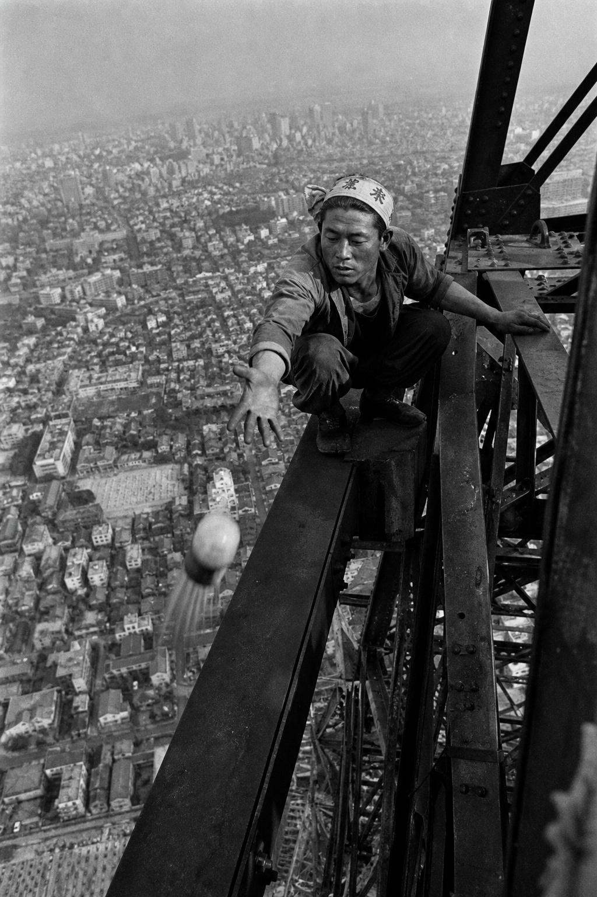
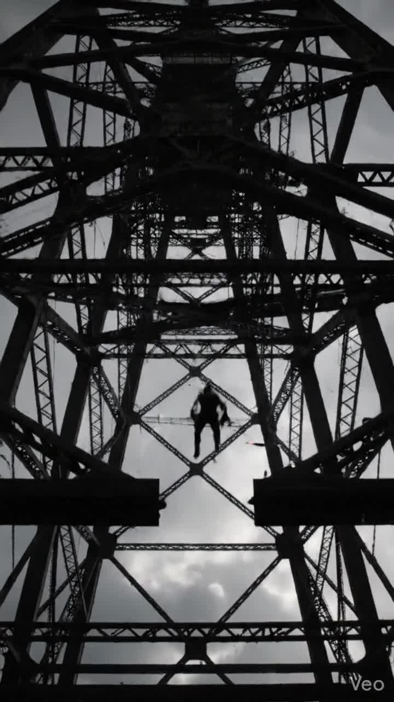
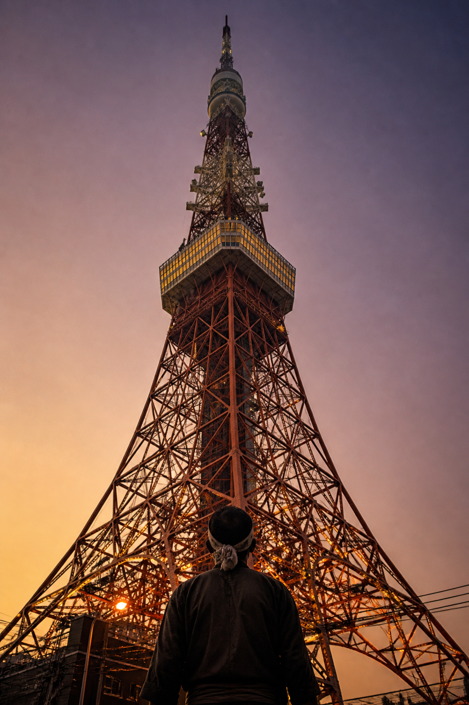

333 meters.
There were men who assembled that height not with cranes, but with their hands.
Almost no one remembers their names today.
333 meters.
There were men who assembled that height not with cranes, but with their hands.
Almost no one remembers their names today.

In Part One, we looked at how some of the steel in Tokyo Tower was forged from Korean War tanks.
The question left hanging was:
who actually lifted that steel into the sky?
Tobishoku (鳶職人) are Japan's traditional high-altitude construction specialists.
You could translate it as "ironworker" or "high-rise construction worker," but something gets lost.
Tobishoku were not ordinary laborers.
They were a kind of physical artist — trained to their absolute limit in both skill and nerve at heights that would stop most people cold.
In the 1950s, Japan had almost no large-scale construction cranes.
The kind taken for granted on any skyscraper site today simply did not exist.
Tokyo Tower's construction began within that constraint.

The joining technique used in Tokyo Tower's construction was riveting.
To connect steel beam to steel beam, a rivet — a short iron pin heated bright red in a furnace — was thrown upward to a worker stationed high in the structure.
That worker caught it with tongs, inserted it into a hole in the steel, and hammered it flat to lock the joint.
This was happening at heights approaching 333 meters.
The footing was a single steel beam.
Safety harnesses bore no resemblance to modern standards.
A strong gust made the steel sway.
Cold temperatures made it contract.
One misstep meant the end.
And still the tobishoku moved through the structure as if they were walking on flat ground.
Photographs from the time show them perched on beams, smoking cigarettes.
There is a particular stillness in those images —
something that exists on the other side of fear.
Construction began in June 1957.
It was completed in December 1958.
Eighteen months.
Roughly 220,000 workers were involved in total.
There were injuries and deaths.
And yet the schedule held.
Japan in that era had reasons to hurry:
the 1964 Tokyo Olympics on the horizon,
an economy surging back to life,
a nation eager to reintroduce itself to the world.
Tokyo Tower was summoned to represent all of that,
and it rose accordingly.

As Tokyo Tower settled into its role as a tourist landmark, the story of its construction quietly faded.
Night views from the observation deck, souvenir shops, photo opportunities — none of that is wrong.
But something fell away.
The names of the people who stacked this tower to 333 meters are not engraved anywhere.
There is no monument to them, no designer credited the way Gustave Eiffel is credited for his tower.
They climbed up, drove the iron home, and came back down.
When you look at the slender geometric lines of Tokyo Tower, they are the product of engineering drawings —
and also the tracework of nameless hands.
The number 333 carries a national declaration, the deliberate decision to surpass the Eiffel Tower's 300 meters.
But what made that number real was not a machine.
It was people.